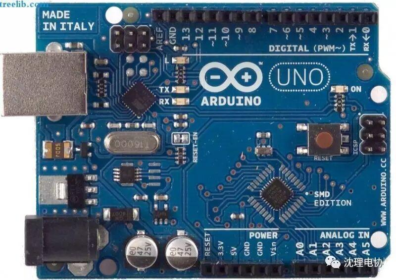
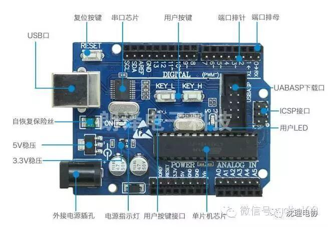

arduino的入门教学
arduino的入门教学
arduino的图片

简单说，Arduino是一块AtmegaX8的开发板，带BootLoader，通过USB转串口和电脑通信。
Arduino把AtmegaX8的功能做了简化，以方便开发，并提供完整的IDE开发环境。
Arduino对最大的强项是提供了丰富的库资源，几乎任何外设，是要在google上敲入关键字 + Arduino，就可以得到你想要的。例如：google输入：PCF8574 Arduino
Arduino是一块简单、方便使用的通用GPIO接口板，并可以通过USB接口和电脑通信。
作为一块通用IO接口板，Arduino提供丰富的资源，包括：
13个数字IO口（DIO数字输入输出口）；
6个PWM输出（AOUT可做模拟输出口使用）；
5个模拟输入口（AIN模拟输入）。
Arduino开发使用java开发的编程环境，使用类c语言编程，并提供丰富的库函数。
Arduino可以和下列软件结合创作丰富多彩的互动作品：Flash，Processing，Max/MSP，VVVV…等。
Arduino也可以用独立的方式运作，开发电子互动作品，例如：开关控制Switch、传感器sensors输入、LED等显示器件、各种马达或其它输出装置。


小编希望大家可以多学习一些知识。和小编一起努力进步。
编辑：金磊

扫描二维码
关注更多精彩